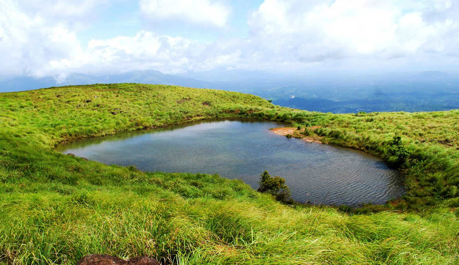
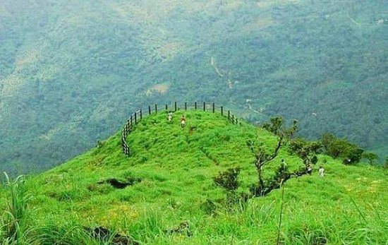
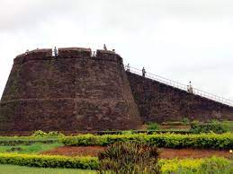

Malampuzha Garden

Malampuzha gardens, located in the lower hills of the Western Ghats, are the only rock-cut gardens in South India. The entire garden is made from broken pieces of bangles, tiles, used plastic cans, tins and other waste materials.
Athirapally Waterfalls

Athirapally falls is widely regarded as the most spectacular of all Kerala waterfalls.Falling magnificently from 80 feet, silvery water splashes down forming a thunderous uproar which can be heard at a distance.
Kuruwadweeps

Kuruvadweep or Kuruva Island is a 950-acre protected river delta. It comprises three densely wooded uninhabited islands and a few submergible satellite islands, which lies on the banks of the tributaries of Kabini River in the Wayanad district, Kerala, India.
Edakkal Caves

Edakkal Caves are two natural caves at a remote location at Edakkal, 25 km from Kalpetta in the Wayanad district of Kerala. They lie 1,200 m above sea level on Ambukutty Mala, near an ancient trade route connecting the high mountains of Mysore to the ports of the Malabar coast.
Chembra Peak
Situated near Meppadi about 5 miles south of Kalpetta, Chembra Peak is one of the best trekking destinations in Kerala. Also known as Chembra Mala, it is the highest peak in Wayanad Hills. It is also listed amongst the highest peaks in the Western Ghats.
Muzhappilangad Drive In Beach
Muzhappilangad Beach is famous for being India's only drive-in beach. At about 7km from Thalassery in Kannur, you have a 4 km stretch of sand that awaits you to simply drive along as you soak in the view of the beautiful Malabar Coast.
Paithal Mala
Paithalmala is a hill station in the Kannur district of Kerala in India. Located near Pottenplave village, at a height of 1372 m above sea level, this is the highest geographic peak in Kannur.It is located at 40 km from Taliparamba and 65 km from Kannur.
Bekal Fort
